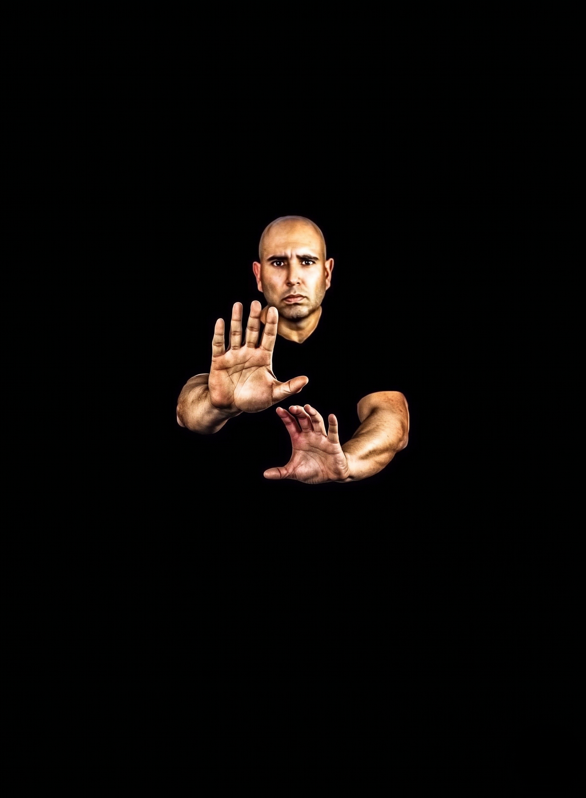
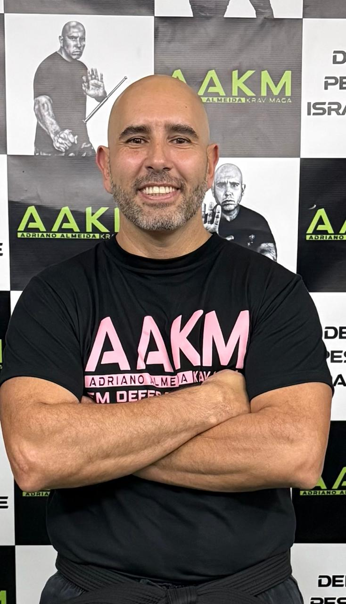

Aula de Krav Maga em Porto Alegre
Turmas regulares focadas no ensino progressivo do método AAKM para cidadãos que buscam autodefesa eficaz na capital gaúcha.
Aprenda a se defender na vida real com Krav Maga.
Treinamento prático, direto e eficaz para situações reais. Sem regras esportivas, focado apenas na sua sobrevivência.

Treinamentos Reais
Técnicas de Defesa
Aulas Presenciais
Ambiente Profissional

Sou Adriano Almeida, Guarda Civil Metropolitano de Porto Alegre-RS. Especialista em Segurança Pública e Institucional, Instrutor de Defesa Pessoal, Mestre de Krav Maga e Palestrante da Psicologia da Autodefesa e Sobrevivência.
Possuo relevante experiência como mestre de Krav Maga, defesa pessoal e treinamento de equipes em órgãos públicos e privados. Atuei diretamente como instrutor de forças policiais e militares, preparando agentes para o combate real.
Sou o fundador do método Adriano Almeida Krav Maga (AAKM), focado exclusivamente em situações reais de sobrevivência. Aqui, você não treina para campeonatos; você treina para voltar em segurança para a sua família.
Desenvolvemos modalidades específicas para atender à sua necessidade de segurança. A academia de Krav Maga número um em Porto Alegre.
Turmas regulares focadas no ensino progressivo do método AAKM para cidadãos que buscam autodefesa eficaz na capital gaúcha.
Treinamento desenhado para usar a biomecânica contra a força bruta. Aprenda a se defender e evitar abusos ou agressões no dia a dia.
Atenção exclusiva e acelerada. Treinamento personalizado em Porto Alegre de acordo com sua rotina e necessidades físicas.
Capacitação para equipes de segurança privada e corporativa, visando contenção de crises e proteção de patrimônio.
Análise de riscos e implementação de protocolos de segurança baseados na experiência real de forças policiais.
Palestras sobre a "Psicologia da Autodefesa e Sobrevivência" para instituições, escolas e corporações em todo o RS.
Veja o impacto real do nosso trabalho na vida das pessoas e instituições.

Conscientização e empoderamento em grandes eventos corporativos.

Especialista em defesa pessoal feminina e psicologia da autodefesa.

Treinamento real e aplicado para situações de alto risco nas ruas.

Referência em segurança pública, partilhando conhecimento na mídia.
O Krav Maga é um sistema de defesa pessoal criado em Israel por Imi Lichtenfeld, desenvolvido para ser eficiente em situações reais de perigo extremo.
Diferente de outras artes marciais tradicionais, o foco não é a competição, pontuação ou regras de tatame, mas sim a sobrevivência. Ele baseia-se nos reflexos naturais do corpo, atingindo pontos sensíveis do agressor para neutralizar a ameaça em segundos.
Hoje, devido à sua eficácia comprovada, o Krav Maga é o sistema de combate corpo a corpo oficial utilizado por forças militares e policiais em todo o mundo.
Não seja uma vítima. Tome a decisão de proteger sua vida e da sua família hoje.
AGENDAR AGORADúvidas comuns sobre defesa pessoal e o método AAKM respondidas diretamente.
O Krav Maga é um sistema de defesa pessoal tático israelense, focado em neutralizar ameaças reais rapidamente. Ele não possui regras, competições ou medalhas. O objetivo único é garantir a sua sobrevivência e integridade física em situações de violência na rua.
Sim, ele foi criado exatamente e exclusivamente para a vida real. As técnicas são desenvolvidas considerando o estresse do combate, ataques com armas (facas, armas de fogo, bastões) e agressões surpresa. Ele ensina como se defender na rua, com respostas explosivas e objetivas.
Artes marciais são excelentes, mas possuem regras, juízes e categorias de peso. Para defesa pessoal pura, sistemas como o Krav Maga são considerados os melhores do mundo, pois ensinam a lidar com múltiplos agressores, ataques armados e ausência de regras, atacando pontos sensíveis (olhos, garganta, genitais) que são proibidos no esporte.
Com certeza. O sistema foi desenvolvido para que qualquer pessoa, de qualquer biotipo, peso ou nível de aptidão física, consiga aprender e aplicar as técnicas. O treinamento AAKM em Porto Alegre é gradual e respeita os limites de cada aluno iniciante.
Sim! A defesa pessoal feminina no Krav Maga funciona porque não depende da força física da mulher para superar a do homem. As técnicas utilizam alavancas, transferência de peso e golpes em pontos extremamente vitais, nivelando a desvantagem de força e permitindo a fuga segura em casos de assédio ou agressão.